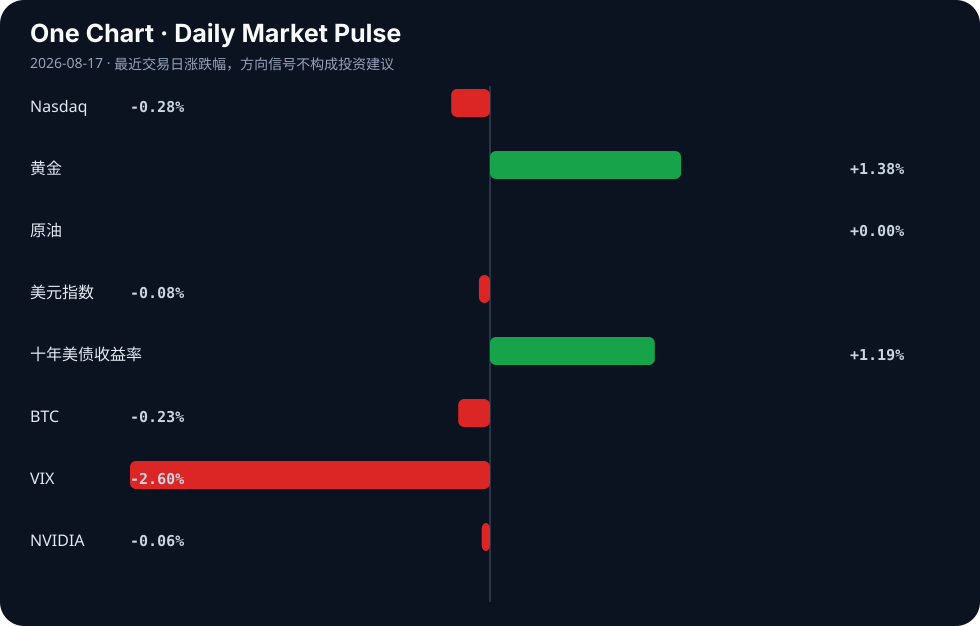

Daily Intelligence
2026-08-17｜Monday
Today’s Thesis｜今日一句话
AI 正在从“能力竞赛”转向“可信任、可交付、可嵌入业务流程”的竞争；短期最重要的变量不只是模型更强，而是企业、监管与用户是否愿意把 AI 放进真实决策链条里 [A1][A18][A24]。
① Executive Summary｜30 秒
- AI：市场叙事的重心从“更强模型”转向“AI 智能体能否通过四道门槛、能否获得信任” [A1][A18][A24]。这意味着真正的分化可能发生在落地能力，而不是单纯参数或演示效果。
- 商业：科技与安全相关并购、产业融合继续出现；同时高校、工具链与内容生态都在围绕“AI 原生”重塑 [A22][A5][A12]。这说明 AI 的商业化正从单点产品扩展到组织能力和基础设施层。
- 宏观：市场信号偏向“风险偏好尚可，但利率与避险资产同时抬升” [表格]。这通常意味着资金并未离开系统，而是在重新定价增长、通胀与不确定性之间的权衡。
② AI Daily
1) AI 落地的门槛正在被重新定义
What Happened
有中文材料直接把“金融业深度运用 AI 智能体”概括为需要闯过“四关” [A1]。与此同时，关于 Anthropic CEO 的报道把 AI 公众接受度与“治愈癌症”或更广义的高公共价值结果联系起来，而另一则报道则强调 AI backlash 本质上是“信任危机” [A3][A24]。 这组材料共同指向：AI 争论已经不只在“能不能做”，而在“能不能被相信、被监管、被集成到高风险流程里”。
Why It Matters
如果 AI 只是演示好看，商业价值会停留在表层；如果它要进入金融、医疗、企业运营等高责任场景，就必须跨越合规、可解释、错误控制和责任归属等门槛 [A1][A24]。 这不是单纯的产品问题，而是部署成本、组织流程和风险偏好共同决定的系统问题。
Second-order Effect
一旦“可信任”成为核心卖点，行业竞争会从“谁的模型更聪明”转向“谁能提供更完整的工作流、审计和责任接口”。A → B → C：公众/监管对信任要求上升 → 企业采购更看重可控性 → 工具链、评测、监控与治理层的价值抬升。
2) AI 生态正从模型竞争滑向应用与分发竞争
What Happened
市场上出现了关于 Stripe 以超过 70 亿美元收购 AI 公司 OpenRouter 的报道 [A22]；同时，Hacker News 上大量项目围绕 AI 编排、反馈、语音输入、UI 与本地平台展开 [A6][A8][A11][A12][A15][A17][A20]。 这说明今天被关注的，不只是“更强的基础模型”，而是“如何把 AI 接入开发、协作、分发和支付”。
Why It Matters
OpenRouter 若被大型支付/平台公司收购，意味着 AI 的入口价值可能从模型本身转向“调用、路由、计费、开发者分发”等中间层 [A22]。而各种工具型项目热度说明，开发者正在为 AI 生成结果的编排、校对和人机协作补齐基础设施 [A12][A20]。 换句话说，AI 的单位经济不再只取决于推理能力，还取决于它是否能稳定嵌入现有软件栈。
Second-order Effect
如果入口层和协作层价值上升，那么未来竞争重点可能不在“谁拥有唯一最佳模型”，而在“谁能控制调用路径、反馈回路和用户界面”。这会提高平台型公司的议价能力，也会迫使模型厂商更重视生态锁定。
3) AI 的社会接受度正在变成独立变量
What Happened
材料中出现了“AI Slop Is Real”“年轻人非常讨厌 AI CEO”“文章是否由 AI 写作是否重要”等讨论 [A2][A10][A16]。这些并非传统意义上的硬新闻，但它们反映了一个现实：用户对 AI 输出质量、权威性和身份标签的敏感度正在上升。
Why It Matters
当市场讨论开始从“能做什么”转向“是否令人反感、是否失真、是否失信”，AI 的采用率就会受到品牌、伦理和内容质量的共同约束 [A2][A10][A16]。 这会影响媒体、教育、客服、创作和面向公众的 AI 产品，因为它们的成本不仅是算力，还包括声誉风险。
Second-order Effect
若“AI 生成”本身成为负面标签，企业可能会主动隐藏或弱化 AI 的存在，转而强调“辅助”“审核”“人类最终负责”。这会让 AI 渗透更慢，但更稳，也更容易进入高价值业务。
③ Business Daily
科技
最值得关注的是科技公司围绕 AI 基础设施、支付与协作工具的再布局 [A22][A12][A17]。 尤其是 OpenRouter 相关并购传闻，若属实，说明 AI 分发和调用路径可能被更大的平台纳入自身生态 [A22]。这不是单笔交易的问题，而是“谁控制 AI 流量入口”的问题。
金融
金融行业被明确点名为 AI 智能体深度应用的重点场景，但材料同时强调需要跨越多重门槛 [A1]。 这意味着金融不是最容易落地的地方，却可能是最能体现 AI 真实价值的地方：只要风控、审计和责任链条能打通，AI 对效率和流程重构的影响会更深。
制造
制造端的信号更多来自宏观叙事而非单一公司事件：多篇材料都在强调供应链、产业升级与“智能经济” [B10][B7][B23]。 其中值得注意的是“tokens as the engine of the intelligent economy”这一表述 [B7]，它暗示制造和数字经济之间的连接不再只靠软件授权，而是靠更细粒度的计算、数据与调用计量。
能源
能源相关材料主要集中在转型与资源效率：澳大利亚继续投入巨资摆脱化石能源、中国媒体强调“减碳即增效”，同时部分地区仍在推动最新勘探技术以最大化气体产量 [B3][B2][B8]。 这些材料并不矛盾，反而显示能源体系正处于“增量转型与存量优化并行”的阶段。
④ Macro Observation｜机制分析
世界正在发生什么？ 全球资金和产业叙事仍围绕三条线并行：AI 基础设施与应用落地、能源与资源安全、以及贸易与地缘政治再分配 [A22][B12][B20][B23]。市场数据上，黄金上涨、十年美债收益率上行、VIX 回落，显示风险偏好并未崩溃，但资金在同时购买避险和久期重新定价 [表格]。
为什么发生？ 一个核心机制是“增长预期与不确定性共存”。AI 带来长期生产率想象，但短期又带来信任、合规和商业化不确定性 [A1][A24]。在这种情况下，资金不会简单撤出，而会在成长资产、避险资产和高确定性现金流之间重新分层配置。 另一个机制是“技术扩散的反身性”：越多行业宣布要用 AI，越多工具、并购和治理需求被创造出来；越多内容被怀疑是 AI 生成，越多人要求验证和审计 [A12][A16][A22]。这会反过来抬高合规、评测和平台中间层的重要性。
资本如何流动？ 从材料看，资本并非只流向最热的模型公司，而是流向更接近分发、路由、支付、治理和行业场景的环节 [A22][A12][A1]。 这意味着“卖铲子”的逻辑正在扩展：不仅是算力和芯片，也包括让 AI 可以被调用、被控制、被收费、被验证的基础设施。与此同时，能源与资源相关资本仍在寻找转型与效率提升的双重收益 [B2][B3][B8]。
接下来关注什么？ 重点不在“AI 还会不会继续火”，而在“谁能把热度转成可持续的流程嵌入”。如果信任问题持续发酵，商业落地速度可能比舆论热度慢；如果并购与平台整合加速，入口层会更集中 [A18][A22]。 因此，后续应重点观察三件事：企业是否公开扩大全链路 AI 部署、监管是否强化审计与责任要求、以及平台是否进一步控制调用与分发入口。
⑤ Signal Dashboard
原样放入下面的市场表格，不修改数值：
| 指标 | 最新值 | 今日 | 信号 |
|---|---|---|---|
| Nasdaq | 26,729.16 | ↓ -0.28% | 中性 |
| 黄金 | 4,440.70 | ↑ +1.38% | 避险/通胀对冲增强 |
| 原油 | 82.40 | → +0.00% | 供需平衡 |
| 美元指数 | 99.59 | ↓ -0.08% | 中性 |
| 十年美债收益率 | 4.70 | ↑ +1.19% | 成长估值承压 |
| BTC | 62,877.14 | ↓ -0.23% | 中性 |
| VIX | 14.25 | ↓ -2.60% | 风险偏好改善 |
| NVIDIA | 225.16 | ↓ -0.06% | 中性 |
⑥ Deep Insight
一个容易被忽略的视角是：AI 产业下一阶段的核心瓶颈，可能不是“算力是否足够”，而是“组织是否愿意把错误责任外包给机器”。表面上看，市场一直在讨论模型性能、推理成本和产品形态，但从今天的材料看，更深层的变化是信任结构正在重写 [A1][A18][A24]。在金融等高风险场景里，AI 智能体要穿过的“四关”本质上不是技术关，而是治理关：谁批准它行动、谁记录它决策、谁承担失败后果、谁来持续校准它的边界 [A1]。这意味着 AI 真正的扩散路径，未必是先进入最前沿的创新部门，而可能是先进入最能制度化约束的部门。原因在于，只有当流程本身可审计、可追责时，企业才敢让 AI 进入“半自动执行”而不是“纯建议输出”。 反过来看，当前一些争论——例如 AI slop、AI CEO 形象争议、AI 写作是否被用户在意——表面是在讨论审美或舆论，实际上是在测试社会对“低摩擦错误”的容忍度 [A2][A10][A16]。如果用户不再容忍粗糙输出，那么 AI 的商业价值会从“生成更多内容”转向“减少错误并提升可靠性”。这会让行业的利润池从前台创作层向后台验证层迁移。换句话说，未来最值钱的未必是最会说话的模型，而是最会承认不确定、最会请求人工接管、最会留下证据链的系统。 反方观点也成立：有人会说，历史上技术采用从来都先快后稳，信任问题最终会被习惯和竞争吞没，用户只要感受到效率提升，就会接受更多 AI。这个判断并非没有道理，尤其在低风险、低责任的场景中，便利性确实可能压倒顾虑。证伪条件是：如果未来 1—2 个月里，AI 工具在高价值行业的部署仍持续加速，且公开的合规、审计和责任机制并未成为采购刚性要求，那么“信任是核心瓶颈”这一判断就需要下调。相反，如果更多报道继续围绕“风险、审计、四关、回撤与责任”展开，而不是单纯围绕模型参数和发布节奏，那么今天看到的信号就不是噪音，而是产业重心切换的前兆。
⑦ Tomorrow Watch
1. 关注是否出现更多关于 AI 智能体在金融、医疗或企业流程中的正式落地案例 [A1]。
2. 验证 OpenRouter 相关并购传闻是否有更明确的交易条款或官方回应 [A22]。
3. 追踪关于 AI 信任、AI backlash 或内容质量争议是否继续升温 [A24][A2][A10]。
4. 比较黄金与十年美债收益率是否继续同向偏强，以判断避险与增长定价是否仍同时存在 [表格]。
5. 观察 VIX 是否维持低位，确认风险偏好改善是短期波动还是持续状态 [表格]。
⑧ One Chart

图表所呈现的市场脉络与今天的信号表一致：避险资产、利率与风险偏好指标并未给出单一方向。更重要的是，它提示读者区分“相关变化”与“因果结论”——同一时间出现的多项波动，未必来自同一个驱动因素。
⑨ Quote of the Day
“The big money is not in the buying and selling, but in the waiting.”
— Charlie Munger
中文理解：真正的大钱往往不来自频繁买卖，而来自有判断后的耐心等待。
Why it matters today：这句话不是装饰，而是今天观察 AI、商业和宏观变化时的一个思考框架：先看机制，再看价格；先看约束，再看叙事。
⑩ Action Items｜今天值得思考什么
1. 关注 AI 在高风险行业落地时，最先被要求补齐的是哪些治理环节 [A1][A24]。
2. 验证平台型并购是否真的在向 AI 分发与调用入口集中 [A22]。
3. 比较“模型更强”与“更可信”两类叙事，哪一个更容易转化为商业合同 [A18][A24]。
4. 追踪 AI 工具链中反馈、审计、UI 与本地化能力是否持续升温 [A12][A17][A20]。
5. 思考在“黄金上行、VIX 回落、利率上行”并存时，市场到底是在定价什么样的未来 [表格]。
信息边界
本期仅基于用户提供的 AI 与商业/宏观材料编写，未使用外部补充信息。部分来源为 Google News、Hacker News 等二手聚合摘要，标题与摘要信息可能不足以还原原文全貌，因此关键判断应回到原始报道核验。市场数据为表格所示最新值，反映的是给定截面，不代表完整交易日全貌。
Sources
AI
- A1：金融业深度运用AI智能体要闯过四关 - 新浪网 — Google News · AI 中文
- A2：AI Slop Is Real — Hacker News · AI
- A3：Anthropic CEO says the way for AI to win over the public is to cure cancer — Hacker News · AI
- A5：Boston-area colleges are looking to make students ‘AI natives’ with new majors - The Boston Globe — Google News · AI
- A6：Smarter – open-source, declarative AI authoring platform (Django, K8s-inspired) — Hacker News · AI
- A8：Legbar – live AI agent sessions beside GitHub CI, in one terminal — Hacker News · AI
- A10：Young People Hate AI CEOs So Passionately That It's Almost Hard to Believe — Hacker News · AI
- A11：Show HN: VocalCode – push-to-talk dictation for AI coding agents, on-device — Hacker News · AI
- A12：Show HN: Remarc – provide more contextual and structured feedback to AI agents — Hacker News · AI
- A15：Show HN: Conw.ai – Independent local AI platform and developer API — Hacker News · AI
- A16：Do people care if articles are written by AI? — Hacker News · AI
- A17：Beautiful UI for AI-native interfaces — Hacker News · AI
- A18：Anthropic sees AI risks rising, no plan to release stronger "Model 2" — Hacker News · AI
- A20：ScreenForm – circle anything on your screen, get an AI answer — Hacker News · AI
- A22：Stripe Clinches over $7B Deal to Buy AI Firm OpenRouter — Hacker News · AI
- A24：Anthropic CEO says AI backlash is 'fundamentally a crisis of trust' — Hacker News · AI
Business & Macro
- B2：应对气候变化锚定“减碳即增效” - 中国经济网 — Google News · 行业
- B3：Australia is spending billions to move beyond fossil fuels — is the energy transition worth the price? - The Times Australia — Google News · Global Economy
- B7：Zhipu AI Co-Founder Tang Jie: Tokens as the Engine of the Intelligent Economy - geopolitechs.org — Google News · Global Economy
- B8：Petroleum minister urges latest exploration tech to maximise gas production - Dailynewsegypt — Google News · Technology Business
- B10：4 Key Sectors Can Make India A Global Manufacturing Hub By 2047: Niti Aayog - BW Businessworld — Google News · Global Economy
- B12：How the US-EU partnership is fracturingHow the US-EU partnership is fracturing - The Manila Times — Google News · Global Economy
- B20：Wenn Metalle zur Waffe werden: Wie Chinas Rohstoff-Monopol den Westen bedroht - Xpert.Digital - Konrad Wolfenstein — Google News · Global Economy
- B21：NDRC aims for closed-loop new-energy solid waste recycling system by 2030 - Global Times — Google News · Global Economy
- B23：Global Trade Surges to $13.7tn as AI and EV Demand Drive Growth - nigeriahousingmarket.com — Google News · Global Economy